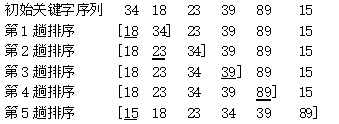
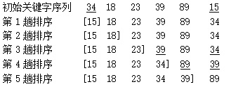
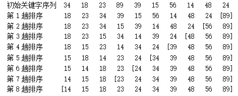

问题描述
排序是计算机程序设计中的一种重要操作，它的功能是将一个数据元素或记录的任意序列，重新排列成一个以关键字递增（或递减）排列的有序序列。
排序的方法有很多，简单插入排序就是一种简单的排序算法。
插入排序的基本思想是顺序将一个待排序的记录按其关键字值的大小插入到一个有序的序列中，插入后该序列仍然是有序的。
简单插入排序是一种最简单的排序方法。它的排序过程为：先将待排序序列中第1个记录看成是一个有序的子序列，然后从第2个记录起依次逐个地插入到这个有序的子序列中去。这很像玩扑克牌时一边抓牌一边理牌的过程，抓一张牌就插入到其应有的位置上去。
简单插入排序的排序过程如下图1所示。图1中方括号[ ]中为已排好序的记录关键字的子序列，下划线的关键字表示当前插入到有序子序列中的记录。

图1 简单插入排序的排序过程示例
编写一个程序，用简单插入排序方法将输入的N个整数按从小到大的顺序排列输出。
输入格式
第一行是一个正整数N (1 ≤ N ≤ 100000)，代表数组中元素的个数。
第二行有N个整数，表示待排序的N个数组元素。
输出格式
一行，有N个整数，这N个整数按从小到大的顺序排列输出。
输入样例
10
7 2 5 4 9 6 3 10 1 8
输出样例
1 2 3 4 5 6 7 8 9 10
将整个数组（n个元素）看成是由有序的（a[0]，…，a[i-1]）和无序的（a[i]，…，a[n-1]）两个部分组成；初始时i等于1，每趟排序时将无序部分中的第一个元素a[i]插入到有序部分中的恰当位置，共需进行n-1趟，最终使整个数组有序。
排序操作是一个二重循环，外循环控制排序趟数（1~n-1），内循环在有序部分中寻找当前元素a[i]的插入位置。
#include <stdio.h>
#define N 50001
int main()
{
int a[N];
int n,i;
scanf("%d",&n);
for (i=0;i<n;i++)
scanf("%d",&a[i]);
for (i=1; i<n ; i++) // 控制a[1],……, a[n-1]的比较和插入
{
int t=a[i];
int j= i-1;
while (j>=0 && t<a[j]) // 在有序部分中寻找元素a[i]的插入位置
{
a[j+1] = a[j];
j--;
}
a[j+1] = t;
}
for (i=0;i<n;i++)
printf("%d ",a[i]);
printf("\n");
return 0;
}
上面介绍了简单插入排序，下面再介绍两种简单的排序算法：直接选择排序法和冒泡排序法。
直接选择排序也是一种比较简单的排序方法，它的排序过程为：先从待排序的所有记录中选出关键字最小的记录，把它与原始序列中的第一个记录交换位置；然后再从去掉了关键字最小的记录的剩余记录中选出关键字最小的记录，把它与原始序列中第二个记录交换位置；依次类推，直至所有的记录成为有序序列。直接选择排序的排序过程如图2所示。图中方括号[ ]中为已排好序的记录关键字的子序列，下划线的关键字表示它对应的记录对需要交换位置。

图2 直接选择排序的排序过程示例
编写一个程序，用直接选择排序方法将输入的十个整数按从小到大的顺序排列输出。
1）编程思路。
直接选择排序的过程是一个二重循环，外循环（i）控制排序趟数（0~n-2），内循环（j）寻找序列a[i]~a[n-1]中的最小者。
寻找一个序列最小值的方法是：先假定序列的第一个元素是最小值，然后将序列的第2个元素至最后一个元素依次和这个最小值比较，如果某个元素比最小值要小，则最小值就是这个元素。
2）源程序。
#include <stdio.h>
#define N 50001
int main()
{
int a[N];
int n,i,j,k;
scanf("%d",&n);
for (i=0;i<n;i++)
scanf("%d",&a[i]);
for (i=0;i<n-1;i++)
{
k=i;
for (j=i+1;j<n;j++)
if (a[j]<a[k]) k=j;
if (k!=i)
{ int temp=a[i]; a[i]=a[k]; a[k]=temp; }
}
for (i=0;i<n;i++)
printf("%d ",a[i]);
printf("\n");
return 0;
}
冒泡排序又称起泡排序，它也是一种简单常用的排序方法。其基本思想是通过相邻记录之间关键字的比较和交换，使关键字值较小的记录逐渐从底部移向顶部，即从下标较大的单元移向下标较小的单元，就像水底下的气泡一样逐渐向上冒；而关键字较大的记录就像石块往下沉一样，每一趟有一块“最大”的石头沉到水底。
冒泡排序的排序过程为：先将第1个记录和第2个记录进行比较，若为逆序，则交换之；接着比较第2个记录和第3个记录；依次类推，直至第n-1个记录和第n个记录进行比较、交换为止，我们称这样的过程为一趟冒泡排序。如此经过一趟排序，关键字最大的记录被安置到最后一个记录的位置上。然后，对前n-1个记录进行同样的操作，使具有次大关键字的记录被安置到第n-1个记录的位置上。重复以上过程，直到没有记录需要交换为止。冒泡排序的排序过程如图3所示。

图3 冒泡排序的排序过程示例
编写一个程序，用冒泡排序方法将输入的十个整数按从小到大的顺序排列输出。
1）编程思路。
冒泡排序的过程是一个二重循环，外循环（i）控制排序趟数（0~n-2），内循环（j）将序列a[0]~a[n-1-i]中每个元素依次与其后面的一个元素比较，如果前面的元素a[j] 比其后的元素a[j+1]大，将二者交换。
2）源程序。
#include <stdio.h>
#define N 50001
int main()
{
int a[N];
int n,i,j;
scanf("%d",&n);
for (i=0;i<n;i++)
scanf("%d",&a[i]);
for (i=0;i<n-1;i++)
{
for (j=0;j<n-1-i;j++)
if (a[j]>a[j+1])
{
int temp=a[j];
a[j]=a[j+1];
a[j+1]=temp;
}
}
for (i=0;i<n;i++)
printf("%d ",a[i]);
printf("\n");
return 0;
}
本题选自杭州电子科技大学OJ网站（http://acm.hdu.edu.cn/showproblem.php?pid=4989）。
Problem Description
Small W is playing a summary game. Firstly, He takes N numbers. Secondly he takes out every pair of them and add this two numbers, thus he can get N*(N - 1)/2 new numbers. Thirdly he deletes the repeated number of the new numbers. Finally he gets the sum of the left numbers. Now small W want you to tell him what is the final sum.
Input
Multi test cases, every case occupies two lines, the first line contain n, then second line contain n numbers a1, a2, ……an separated by exact one space. Process to the end of file.
[Technical Specification]
2 <= n <= 100
-1000000000 <= ai <= 1000000000
Output
For each case, output the final sum.
Sample Input
4
1 2 3 4
2
5 5
Sample Output
25
10
Hint
Firstly small W takes any pair of 1 2 3 4 and add them, he will get 3 4 5 5 6 7. Then he deletes the repeated numbers, he will get 3 4 5 6 7, Finally he gets the sum=3+4+5+6+7=25.
（1）编程思路。
本题的题意是：给定N个数，任取其中的两个数求和，可得到N*（N-1）/2个数，去掉重复的和值后（相同的和值只保留一个），再将它们求总和，问结果是多少？
定义数组b[N*N]保留所求得的和值，每求一个和值t（t=a[i]+a[j]，0≤i,j≤N-1 且i≠j），采用插入排序的思想将t插入到数组b中，使得数组b按升序排列，这样相同的元素一定连续地在一起，去重非常方便。
（2）源程序。
#include <stdio.h>
#define N 105
int main()
{
int n,i,j,k,t,cnt,a[N],b[N*N];
__int64 sum;
while (scanf("%d",&n)!=EOF)
{
cnt=0;
for (i=0;i<n;i++)
scanf("%d",&a[i]);
for (i=0;i<n;i++)
{
for (j=i+1;j<n;j++)
{
t=a[i]+a[j];
k=cnt;
while (k>0 && b[k-1]>t) { b[k]=b[k-1]; k--; }
b[k]=t;
cnt++;
}
}
sum = b[0];
for (i=1;i<cnt;i++)
{
if (b[i]==b[i-1]) continue;
sum=sum+b[i];
}
printf("%I64d\n",sum);
}
return 0;
}
本题选自洛谷题库（https://www.luogu.com.cn/problem/P1059）。
题目描述
明明想在学校中请一些同学一起做一项问卷调查，为了实验的客观性，他先用计算机生成了N个1到1000之间的随机整数 (N≤100)，对于其中重复的数字，只保留一个，把其余相同的数去掉，不同的数对应着不同的学生的学号。然后再把这些数从小到大排序，按照排好的顺序去找同学做调查。请你协助明明完成“去重”与“排序”的工作。
输入格式
输入有两行，第1行为1个正整数，表示所生成的随机数的个数N。
第2行有N个用空格隔开的正整数，为所产生的随机数。
输出格式
输出也是两行，第1行为1个正整数M，表示不相同的随机数的个数。
第2行为M个用空格隔开的正整数，为从小到大排好序的不相同的随机数。
输入样例
10
20 40 32 67 40 20 89 300 400 15
输出样例
8
15 20 32 40 67 89 300 400
（1）编程思路。
为从小到大排好不相同的随机数，每读入一个随机数x，采用插入排序的思想，将x有序插入到结果数组a中，使得a数组各元素按非降序排列。输出时，相同的元素（a[i]==a[i-1]）不再重复输出即可。
（2）源程序。
#include <stdio.h>
int main()
{
int n,i,j,a[101];
scanf("%d",&n);
scanf("%d",&a[0]);
for (i=1;i<n;i++)
{
int x;
scanf("%d",&x);
for (j=i-1;j>=0;j--)
{
if (a[j]>x) a[j+1]=a[j];
else break;
}
a[j+1]=x;
}
int cnt=1;
for (i=1;i<n;i++)
if (a[i]!=a[i-1]) cnt++;
printf("%d\n",cnt);
printf("%d",a[0]);
for (i=1;i<n;i++)
if (a[i]!=a[i-1]) printf(" %d",a[i]);
printf("\n");
return 0;
}
本题选自洛谷题库（https://www.luogu.com.cn/problem/P1116）。
题目描述
在一个旧式的火车站旁边有一座桥，其桥面可以绕河中心的桥墩水平旋转。一个车站的职工发现桥的长度最多能容纳两节车厢，如果将桥旋转180度，则可以把相邻两节车厢的位置交换，用这种方法可以重新排列车厢的顺序。于是他就负责用这座桥将进站的车厢按车厢号从小到大排列。他退休后，火车站决定将这一工作自动化，其中一项重要的工作是编一个程序，输入初始的车厢顺序，计算最少用多少步就能将车厢排序。
输入格式
共两行。
第一行是车厢总数N (≤10000)。
第二行是N个不同的数表示初始的车厢顺序。
输出格式
一个整数，最少的旋转次数。
输入样例
4
4 3 2 1
输出样例
6
（1）编程思路。
因为是通过把相邻两节车厢的位置交换使得车厢有序，典型的冒泡排序方法。采用冒泡排序解决本题即可。在排序过程中每交换一次，进行计数。
（2）源程序。
#include <stdio.h>
int main()
{
int n,a[10000],cnt=0;
scanf("%d",&n);
int i,j;
for (i=0;i<n;i++)
scanf("%d",&a[i]);
for (i=0;i<n-1;i++)
for (j=0;j<n-1-i;j++)
if (a[j]>a[j+1])
{
int t=a[j];
a[j]=a[j+1]; a[j+1]=t;
cnt++;
}
printf("%d\n",cnt);
return 0;
}